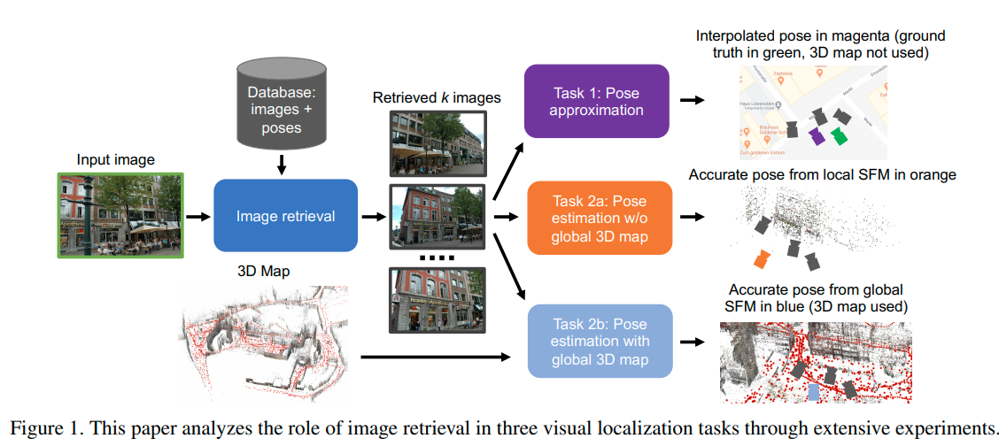

I would like to share my thoughts on 3DV 2020 paper “Benchmarking Image Retrieval for Visual Localization” by Pion et.al.

What is the paper about?
How one would approach visual localization? The most viable way to do it is hierarchical approach, similar to image retrieval with spatial verification.
You get the query image, retrieve the most similar images to it from some database by some efficient method, e.g. global descriptor search. Then given the top-k images you estimate the pose of the query image by doing two-view matching, or some other method.
The question is – how much influence the quality of the image retrieval has? Should you spend more or less time improving it? That is the questions, paper trying to answer.
Authors design 3 re-localization systems.
“Task 1” system estimates the query image pose as average of the short-list images pose, weighted by the similarity to the query image.
“Task 2a” system performs pairwise two-view matching between short-list images and query triangulates the query image pose using 3d map built from the successully matches images.
“Task 2b” pre-builds the 3D map from the database images offline. At the inference time, local feature 2d-3d matching is done on the shortlist images.
What is benchmarked?
The paper compares
- SIFT-based DenseVLAD
and CNN-based
What is important (and adequately mentioned in the paper, although I would prefer the disclamer in the each figure) is that all CNN-based methods have different architectures AND training data. Basically, the paper uses author-released models. Thus one cannot say if APGeM is better or worse than NetVLAD as method, because they were trained on the very different data. However, I also understand that one cannot easily afford to re-implement and re-train everything.
As the sanity check paper provides the results on the Revisited Oxford and Paris image retrieval benchmark.
Summary of results
Paper contains a lot of information and I definitely recommend you to read it. Nevertheless, let me try to summarize paper messages and then my take on it.
For the task1 (similarity-weighted pose) there is no clear winner. (SIFT)-DenseVLAD works the best for the daytime datasets. Probably DenseVLAD is good because it is not invariant and if it can match images, they are really close -> high pose accuracy. For the night both DeLG and AP-GeM are good. As paper guesses, that it because they are only ones, which were trained on night images as well.
There is almost no difference between CNN-based methods for the task2a and task2b (retrieval -> local features matching). This indicates that the limit is the mostly in the number of images and local features.
My take-away messages
Image Relocalization seems to be is more real-world and engineering task, than image retrieval.
And that it why it actually ALREADY WORKS, because if there some weak spot, it is compensated by the system design. Thhe same conclusion from our IMC paper, experiment with ground truth – if you have 1k images for the 3d model, you can use as bad features, as you want. The COLMAP will recover anyway
The retrieval, on the other hand is more interesting to work on, because it is kind of deliberately hard and you can do some fancy stuff, which do not matter in the real world.
Task1 (global descriptor-only) system are quite useless now
Unless we are speaking about the quite dense image representation. I mean, top-accuracy is 35% vs almost 100% for those, which include local features.
Good news: it has a LOT of space for the improvement to work on.
For the task 2a and 2b, robust global descriptors are a way to do the retrieval, sorry VLAD.
The precision will come from the local features. Which I like a lot, because VLAD is more complex to train and initalize, I never liked it (nothing personal).
For the task2a and 2b we need new metrics, e.g. precisition @ X Mb memory footprint
Because otherwise, the task is easily solved by the brute force – either by photo taking, or, at least with image syntesis, see 24/7 place recognition by view synthesis.
Such steps are already taken in the paper Learning and aggregating deep local descriptors for instance-level recognition – see the table with memory footprint.
That is how one could have an interesting research challenge, also having some grounds in the real-world – to work in mobile phones. Otherwise, any method would work, if the database is dense enough.
Robust local features matter for illumination changes
It is a bit hidden in the Appendix, so go directly to the Figure 9. It clearly shows that localization performance is bounded by SIFT, if it is used for two view matching, making retrieval improvements irrelevant. When R2D2 or D2Net are used for matching instead, the overall results for night-time are much better.
That is in line with my small visual benchmark I did recently.
https://twitter.com/ducha_aiki/status/1330495426865344515
That’s all, folks! Now please, check the paper and the code they provided.
Everything you (didn’t) want to know about image matching